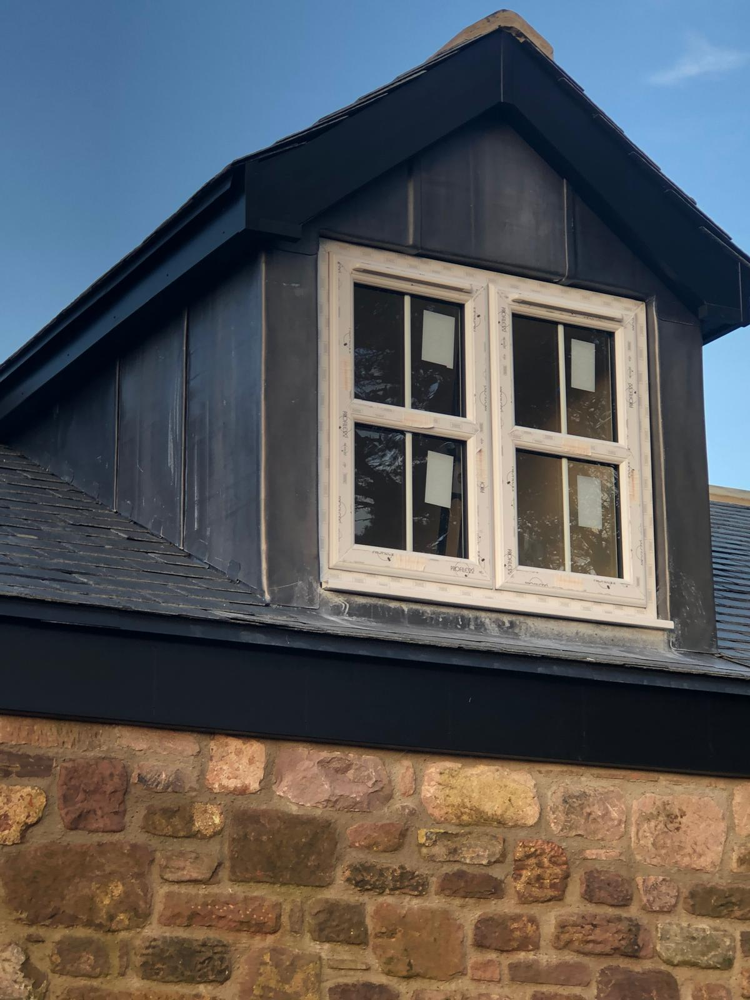
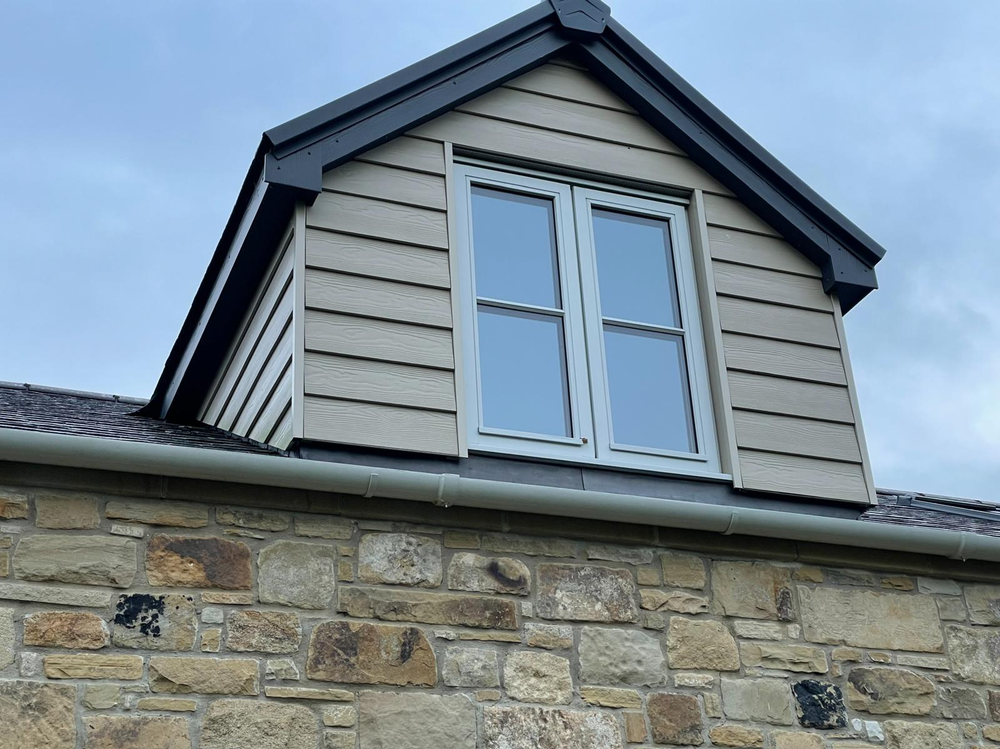
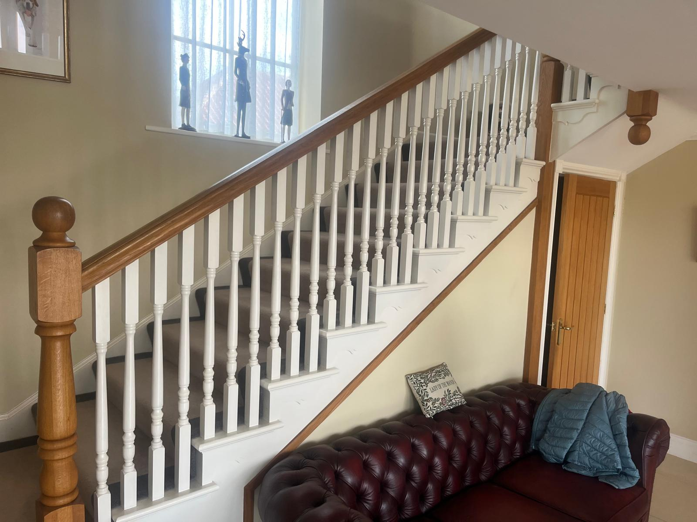

Years Experience
Projects Completed
Satisfaction Guaranteed
Northumberland Based

Ponteland's popular family homes — particularly the detached and semi-detached properties built from the 1960s onwards — typically have pitched roofs with enough headroom to accommodate a comfortable loft conversion. For growing families who love the area but need more space, a loft conversion is consistently the most popular choice.
It preserves the garden, avoids the disruption and cost of moving, and adds genuine value to a Ponteland property. A bedroom with en-suite in the loft can make a four-bedroom house feel like a genuinely different proposition — and keeps the family in the schools and community they already know.
A loft conversion in Ponteland typically adds 15–25% to a property's value — one of the best returns on investment of any home improvement.
We survey your roof and recommend the right conversion type for your specific home — no one-size-fits-all approach.
The most popular choice for Ponteland's detached and semi-detached homes. A rear dormer creates maximum head height and usable floor area — ideal for a double bedroom with en-suite.
Where the roof pitch and head height allow, Velux roof lights can be installed within the existing slope — the most cost-effective option and usually Permitted Development. Great for offices and hobby rooms.
A popular choice on Ponteland's many detached properties with hipped roofs. The sloping end is replaced with a vertical gable, significantly increasing the internal volume available for conversion.
Regardless of type, our Ponteland loft conversions include everything needed for a fully finished room — not just the structural shell.
Recent projects from our loft conversion team

Full rear dormer adding a double bedroom and en-suite bathroom — fully plastered, fitted, and handed over ready to furnish.

Handcrafted oak staircase built in our own workshop and installed as part of a full loft conversion — a beautiful finishing touch.
From survey to finished room — here's what to expect
We visit, assess headroom and roof structure, and recommend the best conversion type for your Ponteland home.
Full written quote and basic layout drawings so you can visualise the new room before agreeing anything.
Roof alterations and structural works first — typically weathered in within the first week so the rest of the build is dry.
Insulation, boarding, staircase, plastering, joinery, and building regs sign-off — delivered as a completely finished room.
Frequently asked by Ponteland homeowners
Most of Ponteland's detached and semi-detached properties built from the 1960s to 1990s are good candidates — they typically have adequate roof pitch and floor-to-ridge height. A free site survey is the only way to confirm suitability for your specific property. We offer this at no charge and with no obligation.
Rear dormer and Velux conversions on detached homes commonly fall within Permitted Development, but hip-to-gable conversions and front-facing dormers typically require planning consent. We'll confirm what applies to your property at the initial survey stage.
A dormer conversion on a typical Ponteland family home takes 8–12 weeks from start to fully finished room, with structural works usually completed in the first 2–3 weeks. We'll give you a confirmed programme in writing at the quote stage.
Absolutely — adding an en-suite or shower room is one of the most requested additions to a loft conversion, and we coordinate plumbing and drainage as part of the project. It significantly increases both the value and the usefulness of the new space.
"We had our loft converted and the results are absolutely superb. The team was professional, punctual, and very skilled. The new bedroom is our teenage daughter's favourite room in the house. Brilliant from start to finish."
David T.
Northumberland
Get a Free QuoteBook a free loft survey today — no obligation, no pressure.